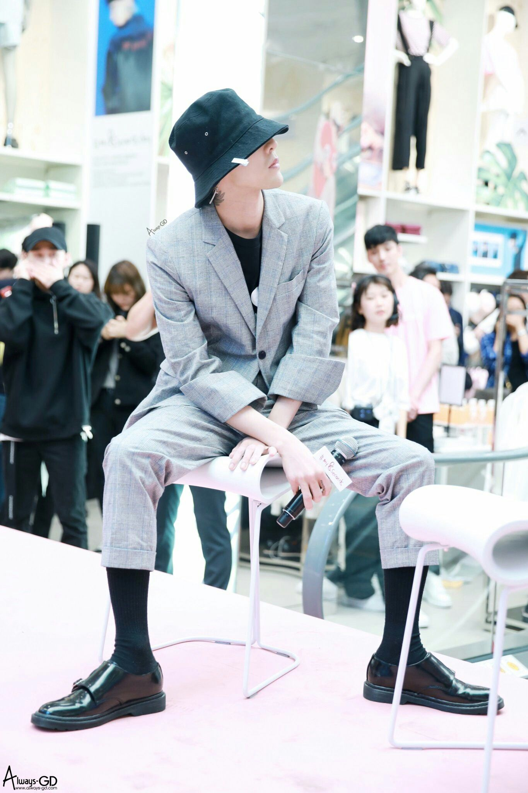

- 패션
- 실력
- 평가
패션
지드래곤은 탁월한 패션 감각으로 패션계에서 가장 큰 주목을 받고 있는 가수이다. 데뷔 초기에는 힙합 그룹을 지향하면서 '사쿤'이라는 브랜드(당시 중학생, 고등학생들이 이빨 그려진 마스크를 쓰거나 이빨그림 백팩을 어느 거리를 가도 들고다녔는데 이 유행의 효시가 빅뱅이다.)를 양지로 끌어올렸고, 이 외 대한민국에서는 비교적 비주류였던 여러 브랜드와 패션 아이템(그 중 반스의 신발이 유행하는 데는 지드래곤의 역할이 컸다고 볼 수 밖에 없다.)들의 이름을 널리 알렸다. 담당 스타일리스트 지은의 인터뷰에 따르면 빅뱅이 초기 데뷔시절 옷을 구하기 위해 일본 스트리트 브랜드들을 뒤지고 다녔다고 한다. 세련된 스트리트 브랜드와 빅뱅의 이미지가 잘 맞아 떨어져 하나의 '빅뱅스타일'을 만들었다. 여기의 일등공신이 스타일리스트 지은과 지드래곤이다. 인터뷰를 보면 자기가 먼저 입고 싶은 옷을 지은에게 말해 지은과 상의하여 트렌드에 맞는지, 혹은 앞섰는지, 뒤쳐졌는지 확인하고 옷을 구매한다고 한다. 지드래곤의 패션이 주목받기 시작한 것은 그의 공항 패션이 알려지기 시작한 뒤부터다. 당시 유명한 팬이 여러 앵글과 해상도로 지드래곤의 공항패션을 찍어올리면서 유명세를 탔다. 웬만한 지드래곤 공항 패션 사진은 다 그 팬의 사진임을 알 수 있다. 그의 공항 패션을 보면 캐주얼 의류부터 본인의 브랜드가 생긴 2016년 즈음 부터는 본인이 직접 만든 의류를 입는데 옷의 색감과 세련미가 보통이 아니다. 사실 지드래곤은 아이템 선택 능력이 뛰어난 것도 있지만 장르를 불문하고 옷을 입을 수 있는 신체와 얼굴도 패셔니스타로 지칭되는데 큰 비중을 차지한다. 키가 작고 마른 체형이다보니 인터뷰에서도 스스럼없이 여성복 라인을 입는다고 할 정도로 여성복 라인 옷도 자주 입고 나온다. 2010년 CHANEL VIP 파티에서도 여성복 라인 자켓을 입어 제대로 흥했다. 동안이라 정장을 입어도 개구지게 소화할 수 있어 정장에 스냅백을 쓰는 용기도 보여준다. 명품들도 협찬에 줄을 선다는데 요즘에는 에디 슬리먼과 연락이 닿으면서 생로랑 파리 옷을 자주 입고 나온다. 진행했던 월드투어에서는 생로랑 파리 옷을 입고 무대에 오르고 있다. 에디 슬리먼 이외에도 지드래곤에게 자기 옷을 입어줘서 고맙다며 한글로 친필 편지를 보내 덕심을 폭발시킨 디자이너도 있다.
